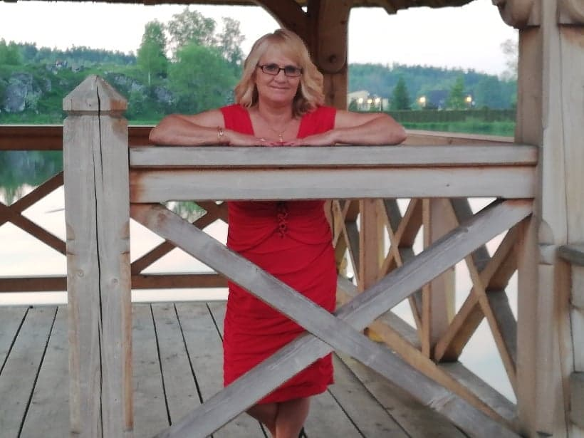

Trochę o mnie...

Pochodzę z województwa Lubelskiego, a dokładniej z miejscowości Janów Lubelski. Obecnie mieszkam w Kluczycach znajdujących się w giminie Secemin, w województwie Świętokrzyskim.
Uczesniczę w wielu literackich konkursach i biorę czynny udział w wydarzeniach i wystawach. Swoje obrazy przekazuje na cele społeczne i charytatywne, moje obrazy znajdują się w wielu domach w Polsce i za granicą. W młodości jak zresztą wielu autorów pisałam do "szuflady" nie myśląc o tym, czy ktoś to przeczyta. Dziś moje zbiory liczą 15 zbiorów tomików poetyckich, kilka utworów prozatorskich, 2 bajki i opowiadań oraz 4 kolorowanki.
Pasją są także robótki ręczne w postaci: haftów, koronek, serwet, bieżników, kolaży, rysunków lawowanych, malowania watą, frottage inaczej frotaż, gwasz, batik, wydrapywanek kolorowych, obraów z wiórków, wytworów z masy solnej, rzeźby mydlanej, kompozycji z wosku i koralików, malowania na szkle, mozaik skorupkowych, malowania świecą, prac z makaronu i kasz różnych, frotaży liści, wycinanek z papieru, wyszywanek na papierze, haftów matematycznych i quilling, origami.
Społecznie prowadzę warsztaty plastyczne dla dzieci i młodzieży, śpiewam w Zespole "Cyraneczka" w Psarach, jestem jurorem w ogólnopolskim konkursie literackim Wespazjana Kochowskiego w Szczekocinach i sponsorem nagród. Działam społecznie i charytatywnie w różnych obszarach. Byłam inicjatorem i współorganizatorem "Przeglądu Zespołów Ludowych w Seceminie".
Zdobyłam wiele nagród i wyróżnień. W 2012 uhonorowana zostałam "Nagrodą Starosty Włoszczowskiego" za osiągnięcia w dziedzinie twórczości artystycznej, upowszechniania i ochrony kultury. Jestem również "Laureatka Plebiscytu Echa Dnia kobieta Przedsiębiorcza" w powiecie włoszczowskim w latach 2012, 2013, 2016 i województwie w latach 2012 i 2013 4 i 10 miejsce. Zostałam też zdobywczynią tytułu "Człowieka Roku 2017" w powiecie włoszczowskim w kategorii kultura, a w 2018 "Człowiek Roku z działalności społecznej i charytatywnej". W połowie czerwca 2017 r.otrzymałam "Świętokrzyską Nagrodę Artystyczną Scyzoryki" w kategorii: literatura i poezja, 23 listopada 2017 r. otrzymałam "Nagrodę Marszałka Województwa Świętokrzyskiego" za 25 lat pracy artystycznej. Dokładam starań by mój dorobek wpisał się na trwałe w kulturę ziemi świętokrzyskiej.
Pasja rozwija i wzbogaca mnie duchowo, dzięki temu mogę tworzyć z potrzeby serca dla siebie, dzieci i lokalnej społeczności. Ze swej twórczości i działalności czerpię radość życia i zadowolenie. Nie wyobrażam sobie życia bez pisania i malowania, bo to jest jedna z możliwości pokazania i dzielenia się z innymi swoim światem emocjonalnym.
Ponadto jestem matką czwórki fantastycznych dzieci: Dawida, Sebastiana, Tomasza i Pauliny, które dorosły i opuściły rodzinny dom.